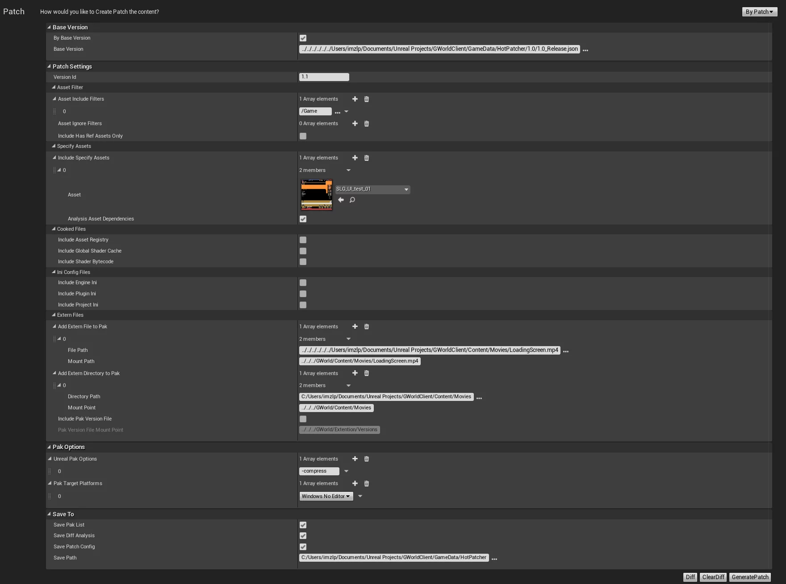
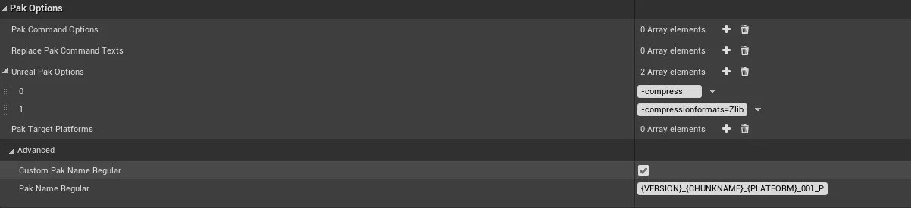
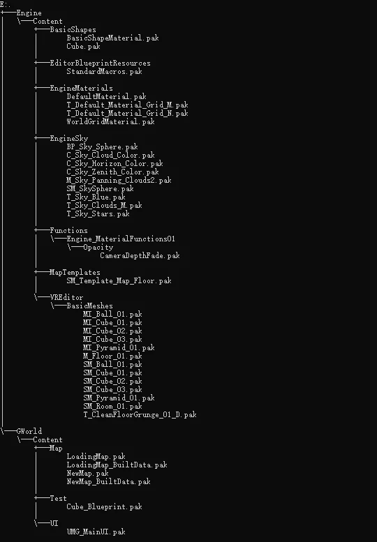

HotPatcher是我最近写的用于打包UE项目资源热更的工具，用于追踪工程版本的资源变动来打出Patch。支持一键Cook多平台，一键打包多平台Patch，编辑器支持Windows和MacOS，再写一套从服务器下载patch的流程就是一套完整的游戏热更方案。HotPatcher在项目里已经使用了一段时间，目前比较稳定，今天整理了一下文档，开源出来，会持续更新，欢迎提issus。
HotPatcher与UnrealFrontEnd中的Patch不同，UE的Patch管理工程时存在一些问题：同样的工程版本，很难在不同的电脑上打出相同的Patch，也无法基于Patch的版本再打出一个Patch，Patch包含的内容不方便预览。在日常开发中还需要能够方便地能够把外部文件打包到pak中（如lua文件、db等non-assets，往往不在Content目录下），并且也需要方便地管理工程和Patch版本。
这个插件就是为了解决上面这样的问题，以项目资源来记录版本，可以只管理工程本身而无需关注UE生成的其他信息。并且可以方便地进行Cook/生成Pak/提取基础包中的资源信息等操作。
目前支持的引擎版本为UE4.21-UE4.26，最近有很多朋友私信来问插件相关的问题，我创建了个群来讨论UE4热更新和HotPatcher插件的问题(QQ群958363331)，欢迎加入交流UE4相关的技术。
为了方便地统一收集和管理热更新和HotPatcher常见的问题与解决方案，我新建了一篇文章来记录和整理：UE4热更新：Questions & Answers，遇到问题可以先去看这个FAQ页面。
注意：该插件只能打出包含UE的资源以及添加的外部文件作为热更的内容（支持lua），修改的C++代码无法热更，需要自己设计好架构。如果是纯蓝图项目则可以完全使用这个工具进行热更。
HotPatcher插件支持根据选择只打包指定的资源（可以指定包含过滤器以及忽略过滤器以及可以指定单个资源），支持资源的递归依赖分析（如只打包某个地图及其所有依赖的资源），打包的Path中可以选择不包含未引用的资源，也不会包含未改动的资源，还会分析项目中的无效资产以及忽略重定向器的资源，实现了基于项目资产的版本追踪而无需管理额外的内容（如DDC），只需要在打Patch之前Cook一遍保证Cook的内容是基于最新工程版本的即可（也支持在生成Patch时自动Cook所有要包含的资源）。而且还支持Chunk、支持bMonilithic模式，配置化的方式支持随意组合，支持多线程打包、支持导出资源的依赖关系，而且还支持通过Commandlet来执行Cook和Patch以及Release信息的导出，可以随意结合ci/cd实现自己的出包流程。
除了包含UE的资源文件外，额外的支持：
- 支持包含项目Cook出的非资源文件。如AssetRegistry.bin/GlobalShaderCache*.bin/ShaderBytecode*.ushaderbytecode；
- 支持包含引擎、项目、和插件的ini文件；
- 支持包含外部的文件夹和文件（如lua文件，视频文件等），并且可以自定义挂载点，供运行时访问；
- 打出的pak中可以不包含任何UE的资源文件（只要在HotPatcher中不添加任何资源即可），方便只更新lua的代码或者只更新Ini之类的配置文件；
- 支持分析不同平台的基础包的差异，生成统一的基础包描述文件，用于后续热更的版本比对。
插件的其他功能：
- 支持Cook单个资源；
- 支持从PakList*.txt中导入多平台的基础包信息
- 支持基于上一个patch版本再打出一个patch版本；
- 支持检测未cook的资源；
- 支持版本间的diff，可以看到新增、修改、删除（但是删除的资源在之前的版本的pak中是无法删除的，只是diff展示用）的资源信息；
- 支持检测重复的文件包含；
- 支持导出该插件所有的中间生成信息和配置；
- 支持自定义UnrealPak的参数(可以自己指定加密参数与项目统一)；
- 支持同时打出多个平台的patch；
- 支持Patch的Chunk，指定在一个Patch版本中把资源分别打包到多个Pak中；
- 支持检测Chunk的文件包含进行错误处理
- 支持把Patch中的每个资源单独打包为pak，支持任意资源（包括但不限于UE asset/外部文件/各种cooked的bin数据、ini）只要是hotpatcher里可以添加的都可以单独打成pak。
- 支持多线程打包pak，不启动
UrealPak.exe，提高执行效率。 - 支持导出所选资源的依赖关系
- 编辑器支持Cook/AddToPatchSettings等功能，方便编辑器下的操作
同时，我也写了一个批量Cook的工具，用于一键Cook指定的多个平台（当然使用命令行也可以），目的就是使用最少的步骤完成任务。
我录了一个插件使用说明的视频（汗，第一次录视频还有点紧张）：
如果不能翻墙可以看B站的链接：UE4热更新：HotPatcher插件使用教程
插件使用流程
为了方便版本管理，项目一定要使用某种版本控制工具，建议Git.
- 打开HotPatcher，选择ByRelease，导出
*_Release.json，其中记录了所指定的每个资源的信息； - 使用UE直接打包任意平台的项目（如windows/android/ios）
- 在工程中修改/添加/删除资源，修改引擎/项目/插件的设置等；
- 打开HotPatch，在Cook项选择你要打Patch的平台并执行Cook；
- 打开HotPatcher，选择ByPatch，以上面导出的
*_Release.json为基础版本，根据需求选择你需要打到Pak中的内容； - 点击
GeneratedPatch，会生成Pak文件和各种信息（其中也包含当前版本的*_Release.json，使Patch可以增量更新） - 生成的Pak中就包含了与上次打出的包中所有差异的内容。
Cook参数说明
HotPatcher中的Cook部分是为了打Patch时方便Cook多个平台，以及方便指定地图（插件会扫描整个项目中的所有地图并列出），不用每次Cook都使用命令行。
Cook可选的分为Platforms/Map(s)/Settings：
Platforms：选择Cook 的平台，可以多选；Map(s)：选择要Cook的Map，该选项下会列出当前工程里所有的Map，可以多选（代码里我也提供了列出引擎和插件目录下Map的选项，如果需要可以在HotPatcherEditor.build.cs中通过控制ENABLE_COOK_ENGINE_MAP和ENABLE_COOK_PLUGIN_MAP的值来自行开启）；Filter(s)：可以选择只Cook指定的目录，可以添加多个；Settings：选择Cook设置，默认提供了Iterator/UnVersioned/CookAll/Compressed四个选项，我也提供了OtherOptions可以自己指定要Cook 的参数。
注意：
Map(s)中的地图和Settings中的CookAll必须要选中其中的一个或者Filters中具有指定的目录才可以执行Cook，如果只选了CookMap，则只会Cook该Map所引用到的资源，没有被引用的不会被Cook，这个需要注意。
点击CookContent之后会将Cook的log输出到UE的OutputLog中。
ByRelease参数说明
ByRelease操作导出的是一个json的文件，记录了导出时所选择的每个Asset资源的HASH值，基于此HASH值我们可以在后续的Patch中知道该资源是不是被修改了。
Release Settings
- VersionId：指定当前导出的资源信息是什么版本。
- ByPakList：从PakList导入来生成Release的配置。
- PlatformsPakListFiles：打基础包生成的
PakList*.txt文件，可以同时指定多个平台，用于分析各个平台的文件差异，并记录这些差异来生成项目在这些平台的Release.json文件，用于统一描述多个平台的基础包信息。
在不通过指定
PakList*.txt导出Release的情况下，导出的release.json中只包含项目中有引用的资源，没有引用的不会包含。但是引擎默认打包时会把一些没有引用的资源也打包到里面，这就会导致一些资源在基础包中事实上已经存在了，但是在release.json中没有记录，有用到这些资源的话会导致重复包含（使用时没有问题，只是这些资源在pak中会有两份）。使用PakList*.txt就不会存在这个问题。
- IncludeFilter：当前Release扫描哪些目录下的资源。
- IgnoreFilter：当前Release忽略哪些目录下的资源。
- bAnalysisFilterDependencies：对所选过滤器的资源进行依赖分析
- AssetRegistryDependencyTypes：对所选过滤器中得资源进行依赖分析时要包含的引用资源类型，依赖于bAnalysisFilterDependencies是否启用。
1 | namespace EAssetRegistryDependencyType |
Soft是具有FSoftObjectReference的资源引用，Hard是直接的资源引用，如果想要Soft和Hard都包含，可以选择Package，这个选项默认情况下选Package就好，除非你自己来处理资源引用关系。
- IncludeHasRefAssetsOnly：对选中的过滤器中的资源文件进行依赖分析（递归分析至Map），如果资源没有被引用则不会打包到Patch中。
- IncludeSpecifyAssets：结构的数组，可以指定当前Release中的单个资源，该结构的第一个参数需要指定资源，第二个参数控制是否分析并包含当前指定资源的依赖到pak中。
- Add Extern Assets to Platform：用于指定在不同的平台包含的不同的文件。
- Target Platform：包含这些文件的平台（AllPlatform则是每个平台都包含）
- AddExternFileToPak：记录Release中包含的非资源文件
- AddExternDirectoryToPak：记录Release中包含的非资源文件
AddExternFileToPak和AddExternDirectoryToPak对应的是Project Settings-Packing中的Additional Non-Asset Directories To Package等设置，用于标记本地包中所包含的非资源文件。
SaveTo
- SaveAssetDependency：是否存储当前Release版本中所选资源的依赖关系。
- SaveReleaseConfig：是否存储当前Release的所有选项信息。
- bBackupMetadatas：是否备份当前版本的Metadata目录。
- BackupMetdataPlatforms：选择要备份Metadata的平台，该选项依赖于
bBackupMetadatas=true。 - SavePath：本次的Release信息存储位置。会在当前目录下创建出名字为
VersionId的文件夹，所有的文件在此文件夹中。
注意：导出Release时，资源的包含需要与UE直接打包时的设置一致，因为这里导出的Release是记录使用UE直接打出的包所包含的资源。
ByPatch参数说明
ByPatch是真正执行打包出Pak的工具，可以基于之前导出的版本(通过ByRelease导出的Json文件)，也可以包含外部文件/文件夹、配置文件（ini）、Cook出的非资源文件（AssetRegistry.bin等），并且可以指定多个平台，支持输入UnrealPak的参数，可以导出当前Patch的各种信息。

支持指定资源过滤器：
HotPatcher打Patch的选项解析：
BaseVersion
- bByBaseVersion：是否是基于某个基础版本的Patch，若为
false，则只打包选择的过滤器文件（依然会分析依赖）和添加的外部文件，若为true则必须要指定一个基础版本，否则无法执行Patch。同时该属性也会控制是否生成Diff信息，若为false则不生成Diff（没有基础版本diff也无意义）。 - BaseVersion：该选项应选择Patch所基于的版本文件，可以
ByRelease或者上次一的Patch生成，默认为*_Release.json。
PatchSettings
- VersionId：当前Patch的版本的ID
- IncludeFilter：当前Patch扫描哪些目录下的资源变动。
- IgnoreFilter：当前Patch忽略哪些目录下的资源变动（资源依赖分析之前）。
- bForceSkipContent：是否开启强制忽略掉某些资源（对Patch的最终结果进行过滤）
- Force Skip Content Rules：强制忽略掉某些目录下的资源（对Patch的最终结果进行过滤），可以用于忽略Editor的Content内容，如
/Engine/Editor和/Engine/VREditor等。 - Force Skip Assets：再Patch的最终结果中忽略掉指定的资源。
- bAnalysisFilterDependencies：对所选过滤器的资源进行依赖分析
- Recursive Widget Tree：对于当前Patch中变动的UserWidget资源，递归分析包含它们的parent Widget资源，并包含进Patch中，用于解决修改了子控件，父控件不生效的问题。
- AssetRegistryDependencyTypes：与
Release中描述的含义相同。 - IncludeHasRefAssetsOnly：对选中的过滤器中的资源文件进行依赖分析（递归分析至Map），如果资源没有被引用则不会打包到Patch中。
- IncludeSpecifyAssets：结构的数组，可以指定需要打到Pak中的单个资源，该结构的第一个参数需要指定资源，第二个参数控制是否分析并包含当前指定资源的依赖到pak中，第三个参数AssetRegistryDependencyTypes与
Release中描述的含义相同。。 - IncludeAssetRegistry：在当前的Patch打出的Pak中包含
AssetRegistry.bin文件。 - IncludeGlobalShaderCache：在当前的Patch打出的Pak中包含
GlobalShaderCache-*.bin文件。 - IncludeShaderBytecode：在当前Patch打出的Pak中包含
PROJECT_NAME\Content\ShaderArchive*.ushaderbytecode文件。 - IncludeEngineIni：在当前打出的Patch中包含引擎目录下的ini，也会包含平台相关的ini
- IncludePluginIni：在当前打出的Patch中包含所有启用的插件中的ini（引擎目录和项目目录的插件都会包含）
- IncludeProjectIni：在当前的Patch打出的Pak中包含项目的ini文件（不会包含
DefaultEditor*.ini） - bEnableExternFilesDiff：是否对添加的外部文件进行Diff比对，用于只打包修改或者新增的外部文件。
- Add Extern Assets to Platform：用于指定在不同的平台包含的不同的文件。
- Target Platform：包含这些文件的平台（AllPlatform则是每个平台都包含）
- AddExternFileToPak：添加外部的非资源文件到Pak中，如txt、视频。
- AddExternDirectoryToPak：记录Release中包含的非资源文件
AddExternFileToPak的元素要求：
FilePath需要指定所选文件的路径。MountPath为该文件被打包到Pak中的挂载路径，默认是../../../PROJECT_NAME/下。
在游戏运行时可以通过FPaths::ProjectDir来访问。
如，AAAA.json的MountPath为../../../HotPatcherExample/AAAAA.json，在运行时加载的路径：
1 | FPaths::Combine(FPaths::ProjectDir(),TEXT("AAAAAA.json")); |
Pak中的所有文件可以通过IPlatformFile来访问。
AddExternDirectoryToPak：结构的数组，添加外部文件夹到Pak中，该结构第一个参数(
DirectoryPath)为指定系统中的文件夹路径，第二个参数(Mount Point)指定该路径在Pak中的挂载路径；指定文件夹下的所有文件会被递归包含，并且挂载路径均相对于所指定的MountPoint。IncludePakVersionFile：是否在当前打出的Patch中存储版本信息。
PakVersionFileMountPoint：由
IncludePakVersionFile控制是否可以编辑，用于指定*_PakVersion.json文件在Pak文件中的挂载点，默认为../../../PROJECT_NAME/Extention/Versions。
ChunkOptions
我为HotPatch增加了Chunk的功能，支持把一个Patch中的资源分别打包到不同的Pak中去。如把一个Patch中的所有Package打包到一个pak里（或者把当前Patch的指定地图打包到某个pak里），所有的lua打包到另一个pak里。
Chunk支持的参数如下：
bEnableChunk：是否对当前的Patch执行ChunkChunkInfos：Chunk信息的列表，用于指定Chunk中应该包含哪些资源。
ChunkInfos的是一个FChunkInfo的结构数组，其结构的成员为：
ChunkName：当前Chunk的名字bMonolithic：是否为当前Chunk里的每个资源打出Pak（已支持），在开启bMonolithic模式时，会禁止添加外部文件和ini/Cook的内部数据，不然存放路径会有些歧义。MonolithicPathMode：单片模式的pak存储路径模式，MountPath是Mount的方式，PackagePath是资源的LongPackageName的路径。bSavePakCommands：是否存储当前Chunk的PakCommand.txtAssetIncludeFilters：指定Chunk中的资源过滤器（注意所选过滤器中的资源不会进行依赖分析）AssetIgnoreFilters：指定Chunk的忽略过滤器- bAnalysisFilterDependencies：对所选过滤器的资源进行依赖分析
AssetRegistryDependencyTypes：与Release中描述的含义相同。IncludeSpecifyAssets：指定Chunk中包含哪些单个资源，支持进行依赖分析AddExternFileToPak：添加外部文件到ChunkAddExternDirectoryToPak：添加外部目录到Chunk，支持递归分析InternalFiles：用于指定Chunk中是否包含AssetRegistry.bin和Ini等文件
基本上Chunk的参数和Patch选择的参数的一致，可以按照需求配置。
注意：Chunk的原理是：先在Patch的设置中选择资源，会执行一遍整个Patch的资源分析，分析出来的结果用于Chunk配置的过滤，意思就是Chunk中所包含的资源必须是本次Patch的中具有的，一定要注意AssetIncludeFilters不会进行依赖分析，如果你Patch中的过滤器中的资源引用到了其他模块，比如引擎或者插件，在Chunk中也需要指定相应的目录到过滤器。
每个Chunk中所指定的资源可以重复，一份资源可以在ChunkA中包含也可以被ChunkB包含。
而且我还给Chunk增加了错误提示，如果开启了Chunk模式，但是Patch中的所有资源没有在Chunk中全部指定，会在HotPatcher底部的Infomations中提示有哪些资源没有在Chunk中被包含，方便进行错误处理。
bMonolithic模式：
- 会把Chunk中所有的单个资源、文件都单独打包为一个pak
- 存放路径为该资源的
mount point路径
PakOptions
- bCookPatchAssets：是否开启为Patch中的uasset进行Cook，如果开启会在打包时对当前Patch中的所有uasset资源进行Cook（会增加Patch的生成时间，需要等待Cook完成）
- PakCommandOptions：该数组可以指定
*PakCommand.txt中每条要打包到pak中资源的的参数。 - ReplacePakCommandTexts：用于替换PakCommand.txt中的文本
- UnrealPakOptions：该数组为
UnrealPak.exe程序的参数。如果什么都不指定，默认的配置为UnrealPak.exe PAKFILE.pak -create=PAK_LIST.txt。 - PakTargetPlatforms：该数组为选择要打出的Patch的平台，可以多选，一定要注意所选的平台已经被Cook。
PakOptions Advanced:

- bCustomPakNameRegular：是否重写Pak命名规则，控制PakNameRegular是否可修改。
- PakNameRegular：生成Pak的命名规则，可以通过预置变量值来控制，目前预置值有：
{VERSION}/{BASEVERSION}/{CHUNKNAME}/{PLATFORM}四个值，在生成时会替换为当前配置的具体值，默认的命名规则为{VERSION}_{CHUNKNAME}_{PLATFORM}_001_P，如果在没有开启Chunk的情况下，{CHUNKNAME}值为空，并且会处理掉两个连续的__。
SaveTo
- SaveDeletedAssetsToNewReleaseJson：控制ContentBrowser中删除的资源是否存储到新ReleaseJson中去，具体描述请看2020.11.07 Update。
- SavePakList：是否存储
UnrealPak.exe的-Create参数文件。 - SaveDiffAnalysis：是否存储当前的Patch版本与Base版本的差异信息。
- SaveAssetDependency：是否存储当前Patch版本中所选资源的依赖关系。
- SavePatchConfig：是否存储当前Patch的所有选项信息。
- bBackupMetadatas：是否备份当前版本的Metadata目录。
- SavePath：本次的Patch信息存储位置。会在当前目录下创建出名字为
VersionId的文件夹，所有的文件在此文件夹中。
Commandlet
我给插件提供了四个个Commandlet，分别是HotCooker和HotPatcher以及HotRelease和HotShaderPatch，用于Cook、Patch生成、导出Release信息以及ShaderPatch，
这四个Commandlet都可以指定-wait参数当Commandlet执行完毕时等待输入（防止窗口自动关闭）。
Commandlet指定的-config文件中的属性可以被替换，使用-PropertyName=来指定（目前不支持指定数组），如果是结构的嵌套属性，如SavePath.Path这样的成员属性，可以通过.来指定：-savepath.path=。
HotPatcher的Commandlet增强支持可以看更新Log：2021.01.14 Update
HotCooker
Cooker使用方法：
1 | UE4Editor.exe PROJECT.uproject -run=HotCooker -config="cook-config.json" |
在编辑器中导出cook配置的时候如果选中了所有地图，会在导出的配置文件里会把bCookAllMap为true，在Cook的Commandlet里执行就会Cook所有地图了，而且只要bCookAllMap为true就会Cook所有地图，和CookMaps里的地图数量没关系。
HotPatcher
Patcher使用方法：
1 | UE4Editor.exe PROJECT.uproject -run=HotPatcher -config="patch-config.json" |
HotRelease
Release使用方法：
1 | UE4Editor.exe PROJECT.uproject -run=HotRelease -config="export-release-config.json" |
HotShaderPatch
ShaderPatch使用方法：
1 | UE4Editor.exe PROJECT.uproject -run=HotShaderPatch -config="export-shaderpatch-config.json" |
它们的-config参数所接收的文件都可以从编辑器中通过插件导出。
编辑器支持(UE4.23+)
HotPatcher添加了在ContentBrowser中对资源选中的右键菜单扩展，可以实现一键Cook、添加所选的资源至Patch Setting的功能。
Cook
AddToPatchSettings
Update Log
2021.03.15 Update
- 增加Release/Patch备份Metadata目录的选项
会把当前工程版本的Metadata目录拷贝至Release/Patch目录下（BackupMetadatas），可以方便管理DevelopmentAssetRegistry.bin和Shaderbytecode，可以用作版本的资产审计以及Shader Patch中。
2021.02.23 Update
- ShaderPatch的文件生成提示
- ShaderPatch的Commandlet（
-run=HotShaderPatch） - 修复Shader Patch的Reset Config错误
- 代码优化
4.25+生成ShaderPatch会Crash的解决方案：UE4.25中ShaderPatch问题
2021.02.01 Update
- 修复勾选
Recursive Widget tree时会stack overflow造成的crash，相关issues：勾选recursive widget tree会几率栈溢出死循环，某些asset会必现。
2021.01.28 Update
- 修复DebugGame Editor运行时无法拉起新进程
- 增加
bStandaloneMode选项，可以控制是否拉起新进程执行任务（true会拉起新进程）
2021.01.22 Update
- HotPatcher的Patch Commandlet可以指定平台
通过-AddPatchPlatforms=WindowsNoEditor,Android_ASTC,IOS方式添加，多个平台使用,分隔。
2021.01.20 Update
- 基础包分Chunk的情况下，支持Release为某个平台添加多个paklist文件
2021.01.19 Update
- 支持通用的外部文件指定模式，可以解决在不同的项目路径之间使用通用的配置
在指定外部文件/文件夹时可以使用[PROJECTDIR]在执行时会替换为真正的项目目录。
可选的路径为：
1 | [ENGINEDIR] |
注意，在执行生产过程中会把真实的路径替换到当前的配置中（Patch和Release自动生成导出的配置文件都是绝对路径的，但是可以自己在编辑器内手动导出基于相对路径的配置文件）。
2021.01.18 Update
- Release/Patch的生成不阻塞Editor
- 可以直接在Editor中看到Log
- 统一UE的Notification的创建方式
本次更新是把之前阻塞Editor的方式改成了拉起一个Commandlet的进程任务来执行，不会对当前的编辑器进程造成影响，与UE打包时相同，避免卡住Editor的焦虑感。
2021.01.14 Update
- 修复Cook Engine目录下插件资源时的路径错误
- byRelease支持命令行导入PlatformPakList
添加方式为使用-AddPlatformPakList=，后面跟上平台名+PakList文件（可以支持多个文件，使用+分隔），多个平台可以使用逗号分隔。
1 | -run=HotRelease -byPaklist=true -AddPlatformPakList=WindowsNoEditor+D:\PakList_FGame-WindowsNoEditor.txt -savepath.path="D:\\" |
- 三个Commandlet均支持替换Config中的参数
- HotRelease的Commandlet可以不指定config文件，直接指定值（需要指定导入paklist文件）
2021.01.13 Update
- 修复Patch中包含插件资源的Cook失败
- 修复Commandlet生成Patch加载不到资源
- 一些其他优化
2021.01.11 Update
- 支持从项目中导入配置到Patch和Release的Setting中
Project Settings-Packaging-Additional Asset Directories to Cook会被添加到AssetIncludeFilters中。Project Settings-Packaging-Directories to never cook会被添加到AssetIgnoreFilters中。Project Settings-Packaging-Additional Non-Asset Directories To Package会被添加到AddExternAssetsToPlatfotm中（AllPlatform）。
项目中Config/DefaultEditor.ini里的AlwaysCookMaps和AllMapsSection下配置的所有地图会被添加至IncludeSpecifyAssets中，并且会勾上bAnalysisAssetDependencies。
2021.01.08 Update
- 支持在ContentBrowser中添加目录到PatchSettings
- 修复勾选CookAsset后通过Commnadlet生成Patch导致的
StaticFindObject的crash错误
1 | LogWindows:Error:lllegal call to StaticFindObject() while serializing object data! |
2020.12.14 Update
- 添加UFlibPakReader函数库，可以实现在不Mount的情况下读取Pak中的文件
2020.12.11 Update
- 支持Shaderbytecode的Patch，通过
byShaderPatch页面配置执行；
Shaderbytecode Patch的要求：
- 备份每次打包的Cooked/PLATFORM/PROJECT_NAME/Metadata目录；
- 最新版本的Cooked/PLATFORM/PROJECT_NAME/Metadata与旧版本的Metadata进行比对；
- 生成的ushaderbytecode文件可以通过HotPatcher添加外部文件形式打包，运行时加载；
注意：目前该功能在4.24及之前引擎版本正常，但是在4.25+中会触发异常，具体原因分析在这里：UE4.25 中 ShaderPatch 问题。解决这个问题需要改动引擎代码，可以根据上面笔记中的原因分析来修改。
2020.12.10 Update
- 修复HotRelease的Commandlet导出失败问题
2020.12.04 Update
- HotPatcher支持UE4.26！
- 修复在编辑器中Cook资源后，对其修改保存导致资源在下次加载时失败的问题
2020.11.26 Update
- 修复在Content Browser中Cook资源时的路径错误
- 修复在新版本代码中无法预览的问题
2020.11.08 Update
- 支持对Cook单个资源时进行检测（对于新创建的资源，拿到的UPackage是不完全的， 使用它对资源进行Cook会Crash）
- ContentBrowser右键Cook资源时支持Cook失败的提示。
注意：如果在工程中新建了资源，直接对这些资源进行Cook是有问题的，因为通过引擎拿到的新创建资源的Package内的数据是不完全的，会导致执行Cook时的Crash，目前插件中的策略是检测要进行Cook的UPackage数据是否正确，如果不正确会忽略掉该资源。
暂时的解决办法时，创建了资源之后重启编辑器，再对这些资源进行Cook或者创建Patch的操作，或者依然通过插件提供的Cook目录和指定地图的功能，不存在上面所说的这个问题，因为它的实现是拉起一个新的UE进程来执行Cook任务，所以本地的资源信息会重新加载）。
2020.11.07 Update
- 添加
bSaveDeletedAssetsToNewReleaseJson：控制ContentBrowser中删除的资源是否存储到新ReleaseJson中去。
其实就是两种版本管理模式：
- ReleaseJson中记录的是当前游戏版本中所有的资源（删除的资源，在UFS中依然存在，因为老Pak中的文件不会被删除）
- ReleaseJson中记录的是游戏中需要让玩家能够体验到的所有资源（不包含移动目录、删除之后的资源）
真正在游戏中的资源没有区别，区别在于HotPatcher管理的版本信息。
2020.11.01 Update
- （UE4.23+）支持直接在ContentBrowser中把所选资源添加至Patch Settings；
- 支持在生成Patch时直接Cook资源（
bCookPatchAssets）。需要注意的是，当Patch中资源很多的情况下，Cook十分耗时，并且需要编译Shader，会大大增加Patch 的生成时间，所以在生成Patch时开启Cook可以用在测试打包一些资源或者在ci中执行时开启，在编辑器中SlowTask进度会卡住编辑器；
2020.10. 31 Update
- 支持Cook单个资源（shader code包含在资源内）；
- （UE4.23+）支持在Content Browser中右键选中Assets(支持多选)进行Cook；
2020.10. 30 Dev Update (Merged)
- PatchSetting支持
bForceSkipContent用于强制忽略某些目录中的资源 ForceSkipContentRules为指定Patch中忽略的资源目录，默认值为/Engine/Editor和/Engine/VREditor，在项目设置中选择Exclude editor content when cooking这两个目录里的资源是不Cook的，所以也无法将他们打包。ForceSkipAssets在Patch版本中忽略指定的资源。- 更名
DiffPatchVersion等函数为DiffPatchVersionWithPatchSetting，并且传递PatchSetting，方便进行Diff时的选项控制。
增加上述两个选项，一是为了与UE默认打包时不Cook的目录相匹配，二是可以自己控制哪些资源不被打包。
注意：ForceSkipContentRules与AssetIgnoreFilters的区别在于：AssetIgnoreFilters忽略的过滤器是进行资源依赖分析之前的步骤，可以用来设置为AssetIncludeFilters中的子目录；而ForceSkipContentRules是把经过diff之后的结果进行一遍过滤操作，排除这些前缀的资源。
2020.10. 27 Dev Update (Merged)
- 支持从打包生成的PakList文件中分析出Release
- 支持导入多个平台的PakList并分析出不同平台的文件差异
- ReleaseSetting和PatchSetting类从UObject改为USTRUCT
- 统一使用序列化USTRUCT的方式来处理Import/Export配置
- 支持在Patch中给特定平台添加特殊的文件（只在指定平台包含）
- 使用
CustomDetailView的方式给Detail面板添加导入PakList的按钮 - 重构部分代码，适配给不同平台添加特殊文件。
- Release.json中剔除额外的配置信息
- 修复MountListener在4.24的错误
本次更新代码变动非常大，并且与之前版本导出的配置文件在当前版本中不通用，所以暂时发布到Dev分支，测试稳定之后合并到master分支，目前经过Relase/Patch/Chunk的流程测试，基本没有问题。
2020.10.17 Update
- 支持对Widget的WidgetTree进行分析，解决子控件修改父控件不生效的问题
如果一个Widget被修改了，能够通过控制这个选项来是否递归地添加所有包含它的Widget资源，可以解决修改了子控件，打patch父控件不生效的问题了。
2020.08.31 Update
- 增加导出Release的Commandlet支持
- 清理重复的代码，整理组织方式
- 增加控制生成Pak的命名规则
- 修复Chunk不包含任何文件时也会打出空包的问题
- 修复
UFlibPakHelper::GetMountedPaks在4.25中Crash的问题
2020.06.04 Update
- 增加Cook导出配置的
bCookAllMap属性，当为true时，在Commandlet模式下会Cook工程目录下中所有的地图。 - 增加ByRelease支持通过
PakList*.txt来生成配置，从而可以完全匹配基础包中的所有资源。
2020.06.03 Update
- 增加插件Cook的Commandlet
- 增加插件Patch的Commandlet
2020.04.27 Update
- 增加Chunk的
bMonolithic模式下的MonolithicPathMode，用于指定单片模式下的pak存储路径规则。
2020.04.24 Update
- 增加是否对过滤器中的资源进行依赖分析的选项
2020.04.23 Update
- 增加可选引用资源的类型
2020.04.18 Update
- 为
UnrealOptions默认添加-compressionformats参数。 - 增加
PreviewChunk的选项，在开启Chunk的情况下可以方便地知道哪个chunk中有哪些资源。
2020.04.10 Update
- 增加
ReplacePakCommandTexts选项，可以自己根据需求替换PakCommand.txt中的文本，如替换打到pak中的资源的MountPath
2020.04.09 Update
- 修复在没有选择过滤器时从PatchSetting生成Chunk的问题/对资源重定向器的溯源操作
- 修复转换Cooked路径时的问题
- 支持导出所有pak的信息、删除pakversion选项
- 支持Release和Patch导出资源的依赖关系
- 给ExportRelease增加FScopeSlowTask进度显示
- 增加可以指定
PakCommand参数的选项
2020.04.08 Update
- 支持多线程打包Pak，直接调用
ExecuteUnrealPak而不是启动UnrealPak.exe，极大提升效率。 - 修复PreviewPatch在选中BaseVersion的情况下与Diff信息不一致的问题
2020.04.07 Update
- 支持
bMonolithic模式，可以把所有引用每个资源单独打到一个pak中。 - 统一了Asset、Cooked的bin、外部文件、ini等所有文件的pak方式。

2020.04.03 Update
- 完成Patch的Chunk功能，统一Patch和Chunk的打包流程
- 代码优化、流程梳理
- 去除
IncludePakVersionFile和PakVersionFileMountPoint选项
2020.04.02 Update
- 增加Patch的Chunk功能
- 修复
FPatcherSpecifyAsset序列化与反序列化的问题 - 优化组织结构
2020.03.28 Update
- 修复当基于基础版本打patch时导出的
*Release.json不全的问题。
2020.03.05 Update
- 修复当Cook的进程异常退出时没有清掉任务状态的问题。
- 在代码中增加Cook时可选Engine或Plugin中的地图，在
HotPatcherEditor.build.cs中通过控制ENABLE_COOK_ENGINE_MAP和ENABLE_COOK_PLUGIN_MAP的值来自行开启。
2020.02.14 Update
- 增加了Patch和Release配置的导入导出
- 生成Pak的默认命名改成XXX_TARGET_PLATFORM_001_P.pak
- 修复了一些潜在问题，建议更新。
2019.12.08 Update
- 新增是否对资源进行依赖扫描的选项，增加diff预览。
2020.02.19 Update
- 为插件增加了导出release时可以选择添加外部文件和文件夹，对应ue打包时添加的非资源外部文件目录。还支持外部文件的diff（可选），对于指定的外部文件和目录，会检测只有修改或者新增的文件才会打包到pak中。
2020.01.13 Update
- 新增生成时的错误信息提示，对未Cook资源的扫描以及重复添加的外部文件进行检测，增加可以指定特定资源到Pak中，并且可选是否对该资源进行依赖分析。
2020.01.14 Update
- 修复会扫描到Redirector会提示Redirector的资源未Cooked，为ExportRelease增加
IncludeSpecifyAssets，可以指定某个资源了（如只指定某个地图）。
2020.01.19 Update
- 增加指定要Cook的目录

更新计划
为了使HotPatcher更易用和更强大，我会在这里记录一些不错的更新建议。
增加支持多线程扫描资源依赖分析(通过拉起单独的进程执行)在UnrealPak下增加直接指定Pak加密参数的选项（开放了可以指定UnrealPak的参数，自己指定加密的参数即可）指定Cook单个资源把打包出的Pak命名从XX_TARGET_PLATFORM_P.pak改成XX_TARGET_PLATFORM_0_P或者中间的数字可以指定。Patch和Release配置文件的导入和导出、以及快速地清理配置。为release增加包含外部文件的选项，与UE的打包时包含外部文件同步。增加对外部文件的Diff，不用每次打包时把所有的外部文件都打包到pak中。在一个Patch中打包出多个pak文件，可选哪些资源打到哪个Pak中。为Chunk的bMonolithic模式增加多线程支持增加Commandlet的支持增加导出Release的Commandlet支持增加可控制生成Pak的命名规则支持打Patch时给特殊的平台添加NoAssets资源追踪UMG的子控件被修改后引用到它的Widget资源支持给多个从多个平台的paklist中分析基础包的Release.json对Patch的最终结果进行过滤设置忽略Editor的资源内容添加的外部文件以相对路径存储于Release.json中(使用Mountpath来进行版本比对)支持打出shaderbytecode的patchPatch时不阻塞编辑器，使用异步任务实现